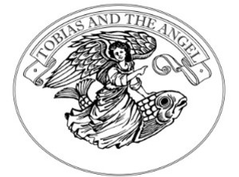

Trade Mark Journal No.2025/015 11 April 2025
UK00004170929 9 March 2025 (16,24,27,40,42)

- Class 16
- Wallpaper stencils; Silk screen prints; Wall decorations of paper.
- Class 24
- Fabric; Muslin fabric; Textile fabric; Flannel [fabric]; Cotton fabric; Linen [fabric]; Denim fabric; Chenile fabric; Non-woven fabric; Rayon fabric; Printed fabrics; Interior decoration fabrics; Fabrics for interior decorating; Textiles for interior decorating; Wall fabrics; Tapestries [wall hangings], of textile; Damask; Mural hangings [textile]; Wall hangings of silk; Textiles in the form of window furnishings; Tapestry [wall hangings], of textile; Silk fabrics for furniture; Wall decorations of textile; Friezes [textile wall hangings]; Borders (textile wall hangings); Window furnishing fabrics.
- Class 27
- Wallpaper; Wallpapers; Textile wallpaper; Wallpaper borders; Wallcoverings; Fabric wall coverings; Wall coverings of textile.
- Class 40
- Silk screen painting; Pattern printing of carpet tiles; Pattern printing of wall coverings; Application of appliques to textiles; Pattern printing of carpets; Application of motifs to clothing; Application of appliques to clothing.
- Class 42
- Interior design; Design of interior decoration; Design of interior decor; Decor (Design of interior -); Interior decor design; Interior decorating design; Architectural design for interior decoration; Interior and exterior design services; Commercial interior design; Shop interior design; Interior design services; Architectural design for exterior decoration; Design of interior decor for shops; Design of building interiors; Design services for the interior of buildings; Interior design services for boutiques; Design of furnishings; Design services relating to interior decoration; Architectural design; Space planning [design] of interiors; Interior design services for shops; Interior decorating; Design of furniture; Furniture design; Interior decoration consultation; Consultancy relating to selection of furnishing fabrics [interior design]; Graphic design; Consultancy relating to selection of curtaining [interior design]; Design of artwork; House design; Furnishing design services for the interiors of buildings; Interior design services for the retail industry; Consultancy services relating to interior design; Visual design; Furnishing design services for the interiors of ships; Professional consultancy relating to the design of interior accommodation; Consultation services relating to interior design; Graphic art design; Design of curtains; Design of stationery; Design and graphic arts design for the creation of web sites; Industrial and graphic art design; Jewelry design; Graphic design services; Product design; Design of blinds; Furnishing design services; Shop design; Technical design; Computer design; Art work design; Pattern design; Design services for art-work.
Tobias and the Angel Design Ltd